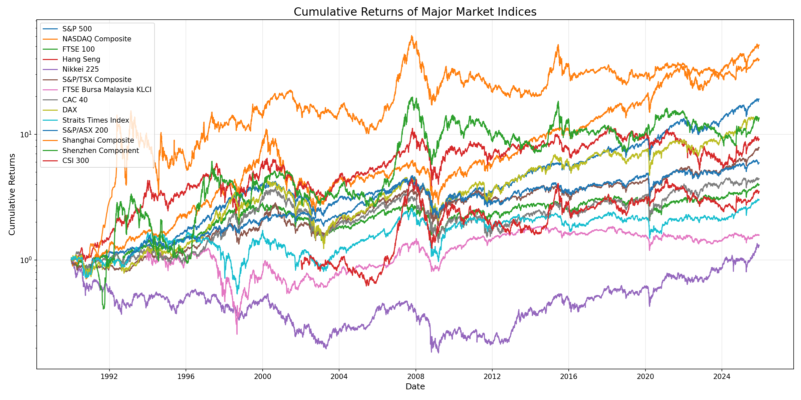
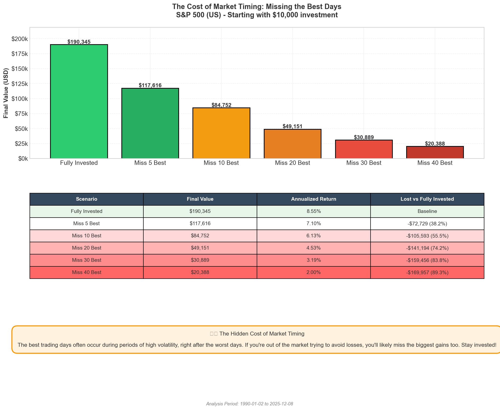
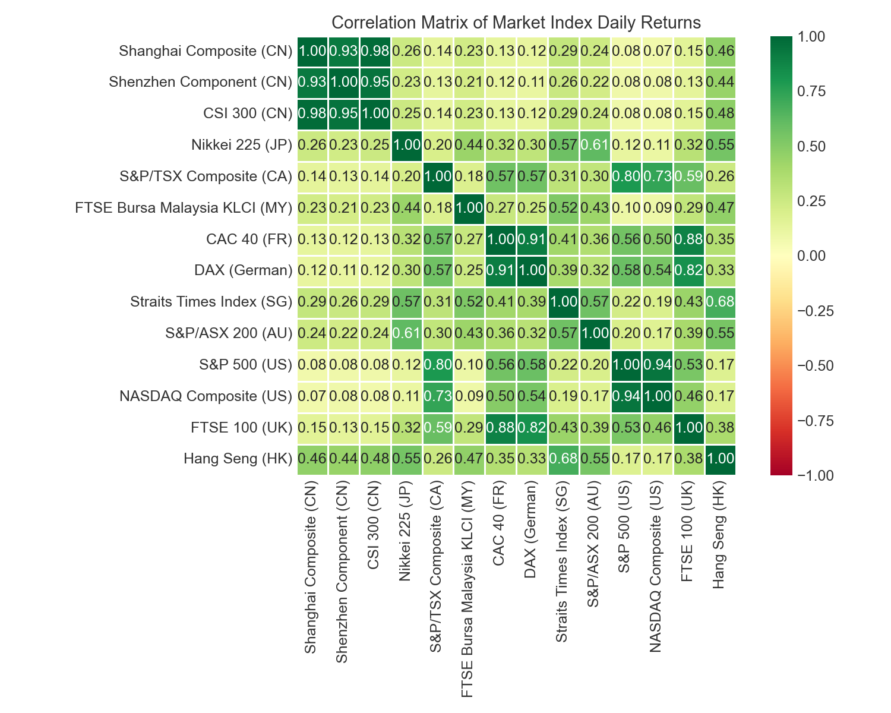

⏰ Time Matters: Your Guide to Long-Term Wealth Building
Based on 35 Years of Real Market Data Across 14 Global Markets
98-100%
Success Rate at 20 Years
14
Global Markets Analyzed
35+
Years of Data
11
Countries/Regions
🎯 THE ONE THING YOU NEED TO KNOW: The longer you stay invested, the higher your chance of making money.
At 20 years, you have a 98-100% chance of profit across major global markets.
Why This Matters to You
Have you ever wondered: "When should I invest?" or "How long should I hold my
investments?"
After analyzing 35 years of real market data from 14 major global markets, the answer is crystal clear:
"Time in the market beats timing the market."
— Proven by 35 years of data
Your Chance of Making Money
Here's what the data shows about your probability of making a profit based on how long you hold your
investments:
Holding Period
Your Chance of Profit
What This Means
1 Year
49% - 81%
Like flipping a coin - very risky!
5 Years
67% - 86%
Odds are in your favor, but still risky
10 Years
84% - 92%
Very likely to make money
15 Years
88% - 100%
Almost certain to profit
20 Years
98% - 100%
Historically, you almost never lose!
This chart shows how your probability of making
money increases dramatically as you hold longer
💡 Key Insight: If you can commit to holding your investments for 20 years, history
shows you have a near 100% chance of making money in most major markets. Even in the worst-case
scenario, investors in the S&P 500 (US) gained at least 57% over 20 years!
Real Numbers: What $10,000 Could Have Become
Let's look at what would have happened if you invested $10,000 in 1990 and held until 2025 (35 years):
NASDAQ Composite (US)
$1,609,000
Your $10,000 became 160x larger!
CSI 300 (CN)
$1,258,000
125x your original investment
S&P 500 (US)
$288,000
28x your original investment
FTSE 100 (UK)
$51,000
Even the most conservative market more than 5x'd your money

Long-term growth of major market indices (log scale
to show growth patterns)
💡 Remember: These are price returns only. With dividends reinvested, your returns
would be even higher!
What About Market Crashes?
You might be thinking: "But what about all those market crashes I've heard about?"
Our analysis includes some of the worst market crashes in history:
📉 The Dot-com Bubble (2000-2002)
📉 The Global Financial Crisis (2008-2009)
📉 The COVID-19 Crash (2020)
📉 Various Asian market corrections
✅ Every single major crash in the last 35 years has been followed by a recovery. Investors who held
through these storms came out ahead.
⚠️ Important: Market timing is nearly impossible. Even professional investors struggle
to predict when to buy and sell. But time IN the market? That's something everyone can control.
The Hidden Cost of Trying to Time the Market
You might think: "I'll just wait for the right time to invest" or "I'll sell before a crash
and buy back in after."
But here's the shocking truth: Missing just a few of the market's best days can cost you most of
your potential returns.

What happens if you try to time the market and
miss the best trading days? (Based on S&P 500 (US) data from 1990-2025)
💥 MISSING JUST 10 OF THE BEST DAYS COSTS YOU OVER 55% OF YOUR POTENTIAL RETURNS!
If you invested $10,000 and stayed fully invested, you'd have $190,345.
But if you missed just the 10 best days, you'd only have $84,752 - losing $105,593!
What the Data Shows
We analyzed what would happen if you tried to time the market and missed the best trading days:
Fully Invested
$190,345
8.55% annual return
Baseline
Miss 5 Best Days
$117,616
7.10% annual return
Lost 38%!
Miss 10 Best Days
$84,752
6.13% annual return
Lost 55%!
Miss 40 Best Days
$20,388
2.00% annual return
Lost 89%!
🚨 The Critical Problem: The best trading days often occur during periods of high
volatility, right after the worst days. If you're out of the market trying to avoid losses, you'll
likely miss the biggest gains too. The market's best days frequently happen right after its worst days -
you can't have one without risking the other!
Real-World Example
Imagine you invested $10,000 in the S&P 500 (US) in 1990 and held until 2025:
If you stayed fully invested: Your $10,000 would become
$190,345
If you missed just the 5 best days: You'd only have
$117,616 -
losing $72,729!
If you missed the 10 best days: You'd only have
$84,752 -
losing $105,593!
If you missed the 40 best days: You'd only have
$20,388 -
losing 89% of your potential gains!
💡 The Solution:Stay invested! You can't predict which days will be
the best, and trying to time the market often means missing those critical days. The best strategy is to
invest regularly and hold for the long term - exactly what our 35-year analysis proves works.
What Should YOU Do? (Based on Your Age)
👶 In Your 20s-30s? You Have the Ultimate Advantage: TIME
Invest as much as you can afford - you have 30-40 years ahead
Don't check your portfolio daily - check it yearly
Market crashes are your FRIEND - you're buying at discounts!
Focus on broad market index funds (like S&P 500 (US), NASDAQ (US))
👨💼 In Your 40s-50s? You Still Have Plenty of Time
You still have 15-25 years until retirement - that's enough for
near-certain gains
Maintain significant equity exposure (60-80% in stocks)
Start thinking about gradual diversification
Remember: even at 15 years, success rates exceed 88-100%
👴 In Your 60s+? Don't Abandon Stocks Entirely
You may still have 20-30 years of life ahead
Don't abandon equities entirely - keep 40-60% in stocks for long-term
growth
Use the "bucket strategy": keep near-term expenses in safer
investments
Long-term money can still benefit from market growth
The Power of Diversification
While all markets trend upward over long periods, they don't move in lockstep. Here's what we found:

How different markets move together
(darker = more correlated)
🇺🇸 US Markets
Highest long-term returns, relatively stable
🇨🇳 Chinese Markets
Higher volatility but also higher potential gains
🇪🇺 European Markets
More modest but stable returns
🌏 Asian Markets
Varying performance patterns, good for diversification
💡 Strategy: A diversified portfolio across different regions can smooth your journey.
When one market is down, another might be up. This reduces your overall risk while maintaining growth
potential.
The Three Golden Rules
1️⃣ Start Early, Stay Long
The data is unequivocal: time is your greatest ally. An investor who
stays in the market for 20 years has historically never lost money in most major markets. The
earlier you start, the more 20-year periods you can accumulate.
2️⃣ Don't Panic During Downturns
Market crashes feel scary, but they're temporary. Our data proves that every
major crash has been followed by recovery. Selling during a crash locks in losses.
Holding through it allows you to participate in the recovery. Remember: The best
trading days often happen right after the worst days. If you're out of the market trying to avoid
losses, you'll miss the biggest gains too - potentially losing 55% or more of your returns by
missing just 10 of the best days!
3️⃣ Diversification Still Matters
While all markets trend upward over long periods, they don't move together. A diversified portfolio
across regions can smooth your journey and reduce risk while maintaining growth potential.
The Bottom Line
"In the short run, the market is a voting machine. In the long run, it is a weighing machine."
— Benjamin Graham
If You Remember Nothing Else:
Short-term (1 year)
Gambling
Essentially unpredictable
Medium-term (5 years)
Risky
Favors you, but losses possible
Long-term (20 years)
Wealth Building
Almost guaranteed to be positive
🎯 THE MAGIC NUMBER: 20 YEARS
If you can commit to holding your investments for 20 years:
• You have historically had a 100% chance of profit in most major markets
• Your minimum return would have been +2% to +162% depending on the market
• Your average return would have been +51% to +609%
Time doesn't just matter—it's everything.
Your Next Steps
Ready to start your wealth-building journey? Here's what to do:
1. Start Today
The best time to invest was 20 years ago. The second best time is TODAY. Every
day you wait is a day of potential growth lost.
2. Invest Regularly
Set up automatic monthly investments. This strategy (called "dollar-cost
averaging") helps you buy more when prices are low and less when prices are high.
3. Choose Broad Market Index Funds
For most people, low-cost index funds that track major markets (like S&P 500,
NASDAQ, or global indices) are the best choice. They're simple, diversified, and historically
perform well.
4. Stay the Course
Don't check your portfolio daily. Don't panic during downturns. Remember: time
is on your side. The longer you hold, the higher your probability of success.